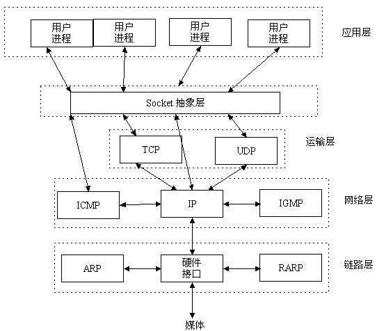
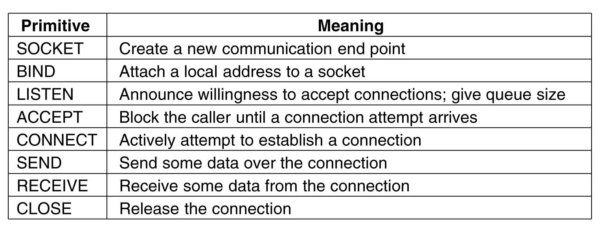
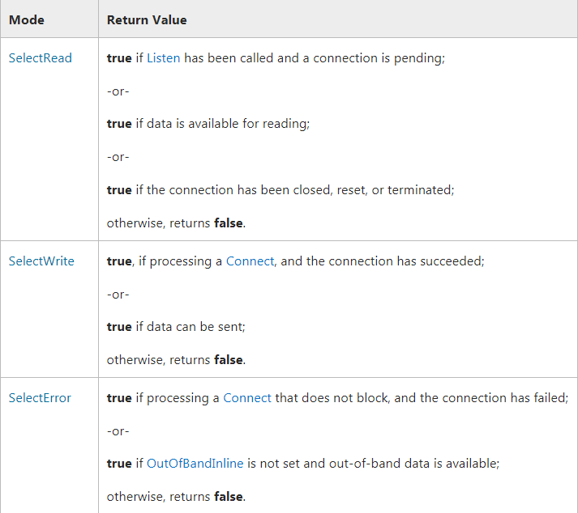

定义
Socket通信是计算机网络中一种重要的数据交换的方式。维基百科对socket定义如下：
在操作系统中，通常会为应用程序提供一组应用程序接口（API），称为套接字接口（英语：socket API）。应用程序可以通过套接字接口，来使用网络套接字，以进行数据交换。最早的套接字接口来自于4.2 BSD，因此现代常见的套接字接口大多源自Berkeley套接字（Berkeley sockets）标准。在套接字接口中，以IP地址及通信端口组成套接字地址（socket address）。远程的套接字地址，以及本地的套接字地址完成连接后，再加上使用的协议（protocol），这个五元组（five-element tuple)，作为套接字对（socket pairs），之后就可以彼此交换数据。例如，在同一台计算机上，TCP协议与UDP协议可以同时使用相同的port而互不干扰。 操作系统根据套接字地址，可以决定应该将数据送达特定的进程或线程。
Socket本身并不是通信协议，只是定义的一个调用接口(API)，我们可以通过socket来使用TCP/UDP协议。socket只是对TCP等协议的抽象，方便应用层调用底层的通信协议。如下图：

Socket 原语
所谓的原语(primitive)是指定义的一些基本操作，跟具体的实现无关。TCP协议中socket定义的原语如下图：

其中包含两个方面，server side和client side。
Server side: Server startup executes SOCKET, BIND, LISTEN.
LISTEN - allocate queue for multiple simultaneous clients.
ACCEPT - suspend server until request. When client request arrives: ACCEPT returns.
Start new socket (thread or process) with same properties as original, this handles the request,
server goes on waiting on original socket.
If new request arrives while spawning thread for this one, it is queued.
If queue full it is refused.
Client side: SOCKET to create. Then CONNECT. When this returns the socket is open.
Both sides can now SEND, RECEIVE.
Connection not released until both sides do CLOSE. Typically client does it, server acks.
用下图来表示：

示例
下面通过一个简单的示例，来展示c#中的socket编程的API，实现socket 多client连接。
server端代码：在while循环中接受client的连接，accept之后另起一个线程来handle这个request，并通过检查socket的状态来判断连接是否是active。
1
2
3
4
5
6
7
8
9
10
11
12
13
14
15
16
17
18
19
20
21
22
23
24
25
26
27
28
29
30
31
32
33
34
35
36
37
38
39
40
41
42
43
44
45
46
47
48
49
50
51
52
53
54
55
56
57
58
59
60
61
62
63
64
65
66
67
68
69
70
71
72
73
74
75static void Run()
{
IPEndPoint server = new IPEndPoint(IPAddress.Parse("127.0.0.1"), 55554);
Socket listener = new Socket(AddressFamily.InterNetwork, SocketType.Stream, ProtocolType.Tcp);
listener.Bind(server);
listener.Listen(10);
while (true)
{
Log("waiting for connection...");
Socket handler = listener.Accept();
Log("connection established.");
try
{
Thread thread = new Thread(new ParameterizedThreadStart(HandleSocket));
thread.Start(handler);
}
catch (Exception e)
{
Console.WriteLine(e.Message);
}
}
}
static void HandleSocket(object socket)
{
var handler = socket as Socket;
byte[] data = new byte[1024];
try
{
bool connected = SocketConnected(handler);
while (connected)
{
var cnt = 0;
var recvStr = string.Empty;
cnt = handler.Receive(data, SocketFlags.None);
recvStr = Encoding.Default.GetString(data, 0, cnt);
if (recvStr.IndexOf("\n") > 0)
{
//response
Log("\n " + DateTime.Now.ToString() + " received cmd: " + recvStr);
Log("send ok back.\n");
byte[] sendStr = Encoding.Default.GetBytes("ok\n");
handler.Send(sendStr);
}
/*
if (recvStr.IndexOf("<EOF>") >= 0)
{
break;
}
* */
connected = SocketConnected(handler);
}
Log("close socket...");
handler.Shutdown(SocketShutdown.Both);
handler.Close();
}
catch (Exception ex)
{
if (handler != null)
{
handler.Shutdown(SocketShutdown.Both);
handler.Close();
}
Log(ex.Message);
}
}client端代码：通过connect来建立连接，建立成功之后，即可发送数据，收发多次数据之后，将连接关闭。
1
2
3
4
5
6
7
8
9
10
11
12
13
14
15
16
17
18
19
20
21
22
23
24
25
26
27
28
29
30
31
32
33
34
35
36
37
38
39
40
41static void Communicate()
{
Socket socket = new Socket(AddressFamily.InterNetwork, SocketType.Stream, ProtocolType.Tcp);
byte[] buffer = new byte[1024];
IPEndPoint endpoint = new IPEndPoint(IPAddress.Parse("127.0.0.1"), 55554);
string recv = string.Empty;
try
{
socket.Connect(endpoint);
byte[] data = Encoding.Default.GetBytes("connect\n");
for (int i = 0; i < 10; i++)
{
socket.Send(data);
Console.WriteLine("{0} send: connect\n", DateTime.Now.ToString());
var cnt = socket.Receive(buffer);
recv = Encoding.Default.GetString(buffer, 0, cnt);
Console.WriteLine("{0} received: {1}", DateTime.Now.ToString(), recv);
if (!recv.Contains("ok"))
{
Console.WriteLine("not ok!\n");
break;
}
}
//byte[] end = Encoding.Default.GetBytes("<EOF>");
//socket.Send(end);
//socket.Disconnect(false);
socket.Shutdown(SocketShutdown.Both);
socket.Close();
}
catch (Exception ex)
{
Console.WriteLine(ex);
}注意点：
在csharp中，socket等资源属于非托管资源，使用完毕之后，必须释放（client和server分别close），否则会导致内存泄漏。
server端close的释放时机一般是client端这边close之后，server也没有数据发送给client端。可以有以下方法来判断建立的连接是否已经close了：
通过client端发送定义好的字符，如
<EOF>，当server端收到预定义好的字符串，则断开与client的连接并回收资源。通过
Socket.Poll方法。该方法可以用来判断socket的连接状态。MSDN文档如下：1
2
3
4public bool Poll(
int microSeconds,
SelectMode mode
)- Poll will block execution until the specified time period, measured in microseconds, elapses. Set the microSeconds parameter to a negative integer if you would like to wait indefinitely for a response.
- The Poll method will check the state of the Socket. Specify SelectMode.SelectRead for the selectMode parameter to determine if the Socket is readable. Specify SelectMode.SelectWrite to determine if the Socket is writable. Use SelectMode.SelectError to detect an error condition.

TCP 浅析占位
下篇博客链接占位。